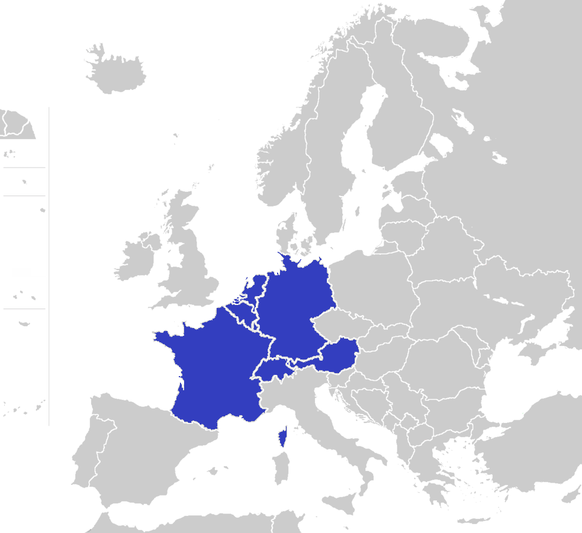
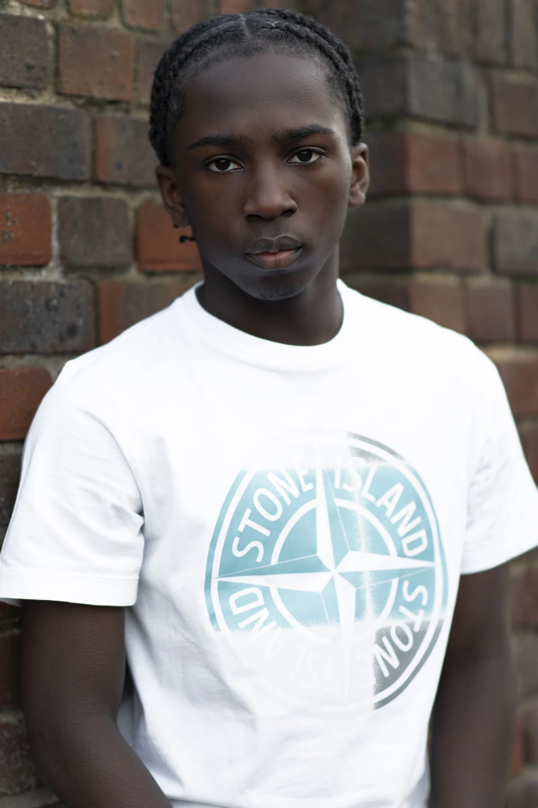

Brief History
Western European languages mostly fall within two Indo-European language families: the Romance languages, descended from the Latin of the Roman Empire; and the Germanic languages, whose ancestor language (Proto-Germanic) came from southern Scandinavia. A thousand years later, British merchants became major participants in the Atlantic slave trade in the early modern period. As part of the triangular trade-system, ship-owners transported enslaved West Africans to European possessions in the New World (especially to British colonies in the West Indies) to be sold there. The ships brought commodities back to Britain then exported goods to Africa. Some plantation owners brought slaves to Britain, where many of them ran away from their masters.
What, fam?

Araloyin Oshunremi, actor hailing from Hackney, London, England and of Yoruba-Nigerian descent. Popularly known in Netflix series 'TopBoy' .
Multicultural London English (abbreviated MLE) is a sociolect of English that emerged in the late 20th century. It is spoken mainly by young, working-class people in multicultural parts of London. As the label suggests, speakers of MLE come from a wide variety of ethnic and cultural backgrounds, and live in diverse neighbourhoods. As a result, it can be regarded as a multiethnolect. MLE is rooted mostly in the widespread migration from the Caribbean to the UK following World War II, and to a lesser extent the migration from other areas such as South Asia and West Africa.
| Standard English | Multicultural London English | My child does not want to go to school | My yute isnt tryna go to school |
|---|